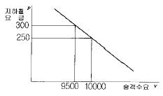
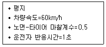
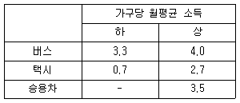
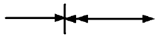
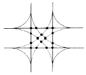

교통산업기사 (2003-08-31 기출문제)
1과목: 교통조사
1. 통행특성조사 장소로서 적당하지 않은 곳은?
- 가정방문
- 고속버스터미널
- 교차로
- 철도역 대합실
(정답률: 알수없음)

2. 주차효율계수와 관계가 먼 것은?
- 주차장 최대이용률
- 최대점유율
- 실용용량을 가능용량으로 나눈값
- 평균주차량
(정답률: 알수없음)
3. 대중교통수단인 지하철요금과 승객수요간의 관계가 그림과 같이 조사되었다면 이를 이용하여 요금이 250원에서 300원으로 인상될 경우의 수요탄력성을 구하면?

- 0.25
- -0.25
- 0.15
- -0.15
(정답률: 알수없음)
4. 사람통행실태조사의 분석을 위한 교통존의 설정기준에 부합되지 않는 것은?
- 존의 경계를 행정구역과 일치시킨다.
- 다양한 토지이용을 한 존내에 포함시킨다.
- 간선도로를 존의 경계로 한다.
- 소도시의 경우 한존을 1,000-3,000명으로 한다.
(정답률: 알수없음)
5. 다음 중 O-D조사에 해당되지 않는 것은?
- 노측면접 조사
- 차량번호판 조사
- 시험차량주행 조사
- 터미널승객 조사
(정답률: 알수없음)
6. 특정 호텔의 주차발생원단위가 4 (대/1,000m2), 주차장 이용효율이 0.8, 건물은 연상면적이 20,000m2 일 때 주차 수요를 원단위법에 의해 산출하면?
- 100 대
- 200 대
- 300 대
- 400 대
(정답률: 알수없음)
7. 통행실태조사시 조사대상지역을 포함하여 외곽선을 폐쇄선이라 하는데 이 폐쇄선을 통하여 유입되고 유출되는 통행에 대하여 조사를 실시하게 되는데 이러한 조사방법을 무엇이라 하는가?
- 코든라인(cordon line)조사
- 스크린라인(screen line)조사
- 차량번호판(license plate)조사
- 기종점(origin-destination)조사
(정답률: 알수없음)
8. 경제성평가시 일반적으로 편익항목에 해당하지 않는 것은?
- 시간절약효과
- 운행비용절감효과
- 고용임금효과
- 에너지절약효과
(정답률: 알수없음)
9. 교통 계획에 있어서 승객과 화물이동과 흐름의 분석, 추정을 위해 설정하는 기본단위공간은?
- 교통존(Traffic Zone)
- 블록(Block)
- 교통섬(Island)
- 단지
(정답률: 알수없음)
10. 다음 중 교통밀도조사의 주목적은?
- 최적신호주기의 결정
- 교통혼잡상태와 정도에 관한 정보 획득
- 통행인의 여행시간에 관한 정보 획득
- 교통 시설물 설계상의 오류 발견
(정답률: 알수없음)
11. 총 거리 18km를 주행하는데 60분이 소요되었고 혼잡으로 12분 그리고 교통통제 시설물로 8분의 정지시간이 있었다 이 여행의 평균주행속도(km/h)를 계산하면?
- 18 km/h
- 22.5 km/h
- 27 km/h
- 20.7 km/h
(정답률: 알수없음)
12. 다음 중 대중교통 버스노선의 각 정류장사이 재차 인원수를 알아내기 위한 조사 방법은?
- 승하차조사
- 노측면접조사
- 통과차량조사
- 관측조사
(정답률: 알수없음)
13. 다음 중 사람통행실태조사의 주 조사목적이 아닌 것은?
- 도로의 시설규모와 설계기준 설정
- 교통 수송분담 실태파악과 요인분석
- 사람의 유동현황 파악
- 사람통행의 발생원단위 파악 및 요인분석
(정답률: 알수없음)
14. 다음 중 도시 지역 가구 구성원의 통행 특성을 파악하기 위한 가구면접조사의 내용에 포함되지 되지 않는 것은?
- 통행기종점
- 교통사고 유무
- 이용교통수단
- 통행목적
(정답률: 알수없음)
15. 교통존 (Traffic Zone)의 크기와 관련한 설명 중 타당한 것은?
- 일반적으로 존의 크기는 조사 분석의 목적과는 상관이 없다.
- 일반적으로 인구 밀도가 낮은 지역은 존의 크기를 크게 하고 인구밀도가 높은 지역은 존의 크기를 작게 한다.
- 같은 지역 내의 존의 크기를 작게 하면 비용과 시간이 절약되는 효과가 있다.
- 도시종합계획에서의 존의 크기는 가로망계획 등과 같은 하위 계획보다 작아야 한다.
(정답률: 알수없음)
16. 15분동안 교통량을 측정한 결과 700대가 관측되었다면 평균차두시간은 얼마인가?
- 1.3초
- 1.5초
- 1.7초
- 1.9초
(정답률: 알수없음)
17. 자료수집결과 속도와 밀도와의 관계가 u=54.51-0.24k 로 밝혀졌다면 최대교통량은 얼마인가?
- 2098
- 3095
- 2584
- 3288
(정답률: 알수없음)
18. 한 교통류에서 속도가 50km/시, 밀도가 42대/km로 조사되었다면 교통량은 얼마인가?
- 1,⑤0대/시
- 2,100대/시
- 1,800대/시
- 2,000대/시
(정답률: 알수없음)
19. 주로 교통류의 분석에 사용되며 측정된 속도조사 자료들의 조화평균으로 산정되어 지는 값은?
- 시간평균속도
- 공간평균속도
- 산술평균속도
- 지점평균속도
(정답률: 알수없음)
20. 어느 도시부 교차로에서 첨두 1시간에 대해 교통량을 조사한 결과 각각 15분 간격으로 725대, 492대, 630대, 495대로 집계가 되었다면 첨두시간계수는 얼마인가?
- 0.88
- 0.78
- 0.95
- 0.81
(정답률: 알수없음)
2과목: 교통운영
21. 교통용량에 변화를 주는 요인에 포함되지 않는 것은?
- 도로조건
- 교통조건
- 차량조건
- 교통운영조건
(정답률: 알수없음)
22. 동시연동시스템에 관한 다음 설명 중 틀린 것은?
- 교차로 간격이 비교적 짧을 때 유리하다.
- 교통량이 아주 적은 경우에 사용하면 유리하다.
- 주도로에 교통량이 많을 때 , 부도로로부터 주도로를 회전하거나 횡단하는 것이 어렵다.
- 주기와 시간분할이 통상 그 신호체계내의 하나 혹은 두 개의 주요 교차로를 위주로 결정되므로 나머지 교차로에 대해서는 비효율적이다.
(정답률: 알수없음)
23. 다음 중 주도로의 반감응신호제어기에 사용되는 신호시간이 아닌 것은?
- 최소 녹색시간
- 황색시간
- 단위 연장시간
- 보행자 횡단시간
(정답률: 알수없음)
24. 용량분석에서 중차량이 교통에 나쁜 영향을 주게되는 직접적인 원인이 아닌 것은?
- 중차량은 승용차보다 넓은 도로면을 차지한다.
- 중차량의 차 높이가 승용차보다 높다.
- 중차량은 승용차보다 가·감속 능력이 떨어진다.
- 중차량은 승용차보다 등판 능력이 떨어진다.
(정답률: 알수없음)
25. 교통류의 3 대 요소가 아닌 것은?
- 속도
- 교통량
- 밀도
- 도로용량
(정답률: 알수없음)
26. 차량의 속도분포에서 속도의 분산(표준편차)이 나타내는 특성으로 틀린 것은?
- 표준편차가 크면 추월, 차선변경 등의 빈도수가 많아진다.
- 표준편차가 적으면 교통류안의 마찰이 비교적 크다.
- 분산은 교통류의 효율성과 안전성을 나타낸다.
- 표준편차가 적으면 비교적 안정되고 순화된 교통류를 이룬다.
(정답률: 알수없음)
27. 다음의 조건하에서 필요한 차량 정지 거리는?

- 약 30m
- 약 45m
- 약 60m
- 약 75m
(정답률: 알수없음)
28. 다음 중 교통량의 도착분포 등을 나타내는 계수 분포가 아닌 것은?
- Poisson 분포
- Binomial 분포
- Negative Binomial 분포
- Erlang 분포
(정답률: 알수없음)
29. 교통신호 시간 결정시 고려해야 할 사항이 아닌 것은?
- 신호등의 위치
- 보행속도
- 운전자 반응시간
- 차량의 길이
(정답률: 알수없음)
30. 운전자의 인지반응시간 (PIEV 시간)에서 다음 중 어떤 것을 제외한 것을 반사시간 또는 순반응시간이라 하는가?
- 행동
- 행동판단
- 식별
- 지각
(정답률: 알수없음)
31. 충격파 이론을 가장 잘 설명한 것은?
- 차량주행시 속도와 교통량의 변화에 따른 차량움직임의 전이현상
- 차량주행시 밀도와 교통량의 변화에 따른 차량움직임의 전이현상
- 차량주행시 속도와 밀도의 변화에 따른 차량움직임의 전이현상
- 차량주행시 속도와 교통류의 변화에 따른 차량움직임의 전이현상
(정답률: 알수없음)
32. 어떤 도로에서 년2회의 교통사고가 발생하였다. 교통사고 발생빈도가 포아송분포를 따른다고 가정하면, 연간 5번 교통사고가 일어날 확률은 얼마인가?
- 0.016
- 0.026
- 0.036
- 0.046
(정답률: 알수없음)
33. 한 도로에서의 교통류식이 q = -0.⑤k2 + 30k 로 도출되었다. 이 때, 최대 밀도를 구하면?
- 0
- 400
- 600
- 800
(정답률: 알수없음)
34. 차량이 움직이는데 발생되는 저항중 노면과 타이어의 마찰, 엔진 압축력에 따른 내부저항 또는 에너지 손실과 관계되는 저항은?
- 회전저항
- 공기저항
- 곡률저항
- 경사저항
(정답률: 알수없음)
35. 교통용량분석에서 신호교차로의 이상적인 조건에 해당하지 않는 것은?
- 모든 진행은 직진방향이다.
- 승용차만으로 구성된 교통류이다.
- 정지선에서 75m이내는 버스정류장이 없다.
- 차로폭은 3.5m이상이다.
(정답률: 알수없음)
36. 다음 비통제 교차로에서의 기본 통행우선권 수칙 중 틀린 것은?
- 교차로에 접근하는 차량의 운전자는 다른 접근로에서 교차로에 이미 진입한 차량에게 우선권을 양보해야 한다.
- 두 접근로에서 거의 동시에 접근한 차량의 경우에는 왼쪽 접근로의 차량이 우선권을 가진다.
- 좌회전하려고 하는 운전자는 맞은 편에서 접근하는 직진차량에게 우선권을 양보해야 한다.
- 비신호 교차로에서 도로를 횡단하고 있는 보행자에게 차량은 우선권을 양보해야 한다.
(정답률: 알수없음)
37. 교통량 중 신호등, 표지, 노면표시, 일방통행 등 교통규제시설 설치에 이용되는 교통량은?
- 일평균교통량
- 시간교통량
- 연교통량
- 첨두시간교통량
(정답률: 알수없음)
38. 다음 중 교통량을 나타내는 특성에 대하여 잘못 설명한 것은?
- 연평균 일교통량(AADT)은 1년간 통과한 차량수를 365로 나눈 값으로 한지점에서의 24시간 교통량을 말한다.
- 평균일 교통량(ADT)은 일정기간동안 통과한 차량수를 일정기간으로 나눈 값으로 한지점에서의 24시간 교통량을 말한다.
- 피크시 교통량(Peak Hour Volume)은 피크시 양방향 1시간 교통량을 말한다.
- 15분 교통량은 피크시간내의 최대 15분 교통량을 통상적으로 이용한다.
(정답률: 알수없음)
39. 교차로의 교통통제 목적이 아닌 것은?
- 차량의 통행속도 증가
- 교통용량증대
- 사고 감소 및 예방
- 주도로에 통행우선권 부여
(정답률: 알수없음)
40. 다음 중 반복적 정체에 속하는 경우는?
- 사고에 의한 정체
- 고장차량으로 인한 정체
- 물건이 떨어져 생기는 정체
- 수요가 용량을 초과하여 아침마다 발생하는 정체
(정답률: 알수없음)
3과목: 교통계획
41. 현재 대도시에서 법정규모이상의 건축물을 신축할 경우 주차장법에 의한 부설주차장 설치기준이 맞는 것은?
- 운동경기 관람장 - 좌석당
- 종합병원 - 직원당
- 골프장 - 1홀당
- 판매시설 - 매장면적당
(정답률: 알수없음)
42. 서비스함수 t=m+nV에서 m=5분, n=0.001분/대/시간이고, 통행량이 V=a+bt에서 a=15,000대/시간, b=-240대/시간/분이라고 주어졌다면 평형상태의 통행량과 시간은 얼마인가?
- 통행량= 11,129대/시간 , 시간= 16.13분
- 통행량= 13,128대/시간 , 시간= 18.13분
- 통행량= 15,131대/시간 , 시간= 20.13분
- 통행량= 17,130대/시간 , 시간= 22.13분
(정답률: 알수없음)
43. Traffic in Town의 저자로서 지구교통계획 개념을 발전시킨 사람은?
- C. stein
- Buchanan
- Manheim
- Greenshield
(정답률: 알수없음)
44. 교통조사에서 현재의 상태가 아닌 가상의 상태에 대한 교통이용자의 행동이나 태도의 변화를 조사하는 기법은?
- 선호의식조사(stated preference survey)
- 스크린라인조사(screen line survey)
- 폐쇄선조사(cordon line survey)
- 노측면접조사
(정답률: 알수없음)
45. 다음중 일방통행의 장점이 아닌 것은?
- 안전성 향상
- 상충이동류 감소
- 회전용량의 감소
- 신호시간 조절용이
(정답률: 알수없음)
46. 토지이용 밀도에 대한 설명으로 옳지 않은 것은?
- 도시교통계획에서 많이 이용되는 토지이용밀도의 지표는 인구, 토지, 건물의 세가지 요소의 관계로 표현된다.
- 인구밀도는 상주 및 주간 인구밀도로 구분되며, 상주인구밀도는 상주인구수에 대한 토지면적으로 구한다.
- 통상 밀도의 개념은 순밀도와 총밀도로 구분한다.
- 건축밀도를 나타내는 건폐율은 건물 연면적에 대한 토지면적의 비율(%)이다.
(정답률: 알수없음)
47. 고속도로 용량분석에 있어서 교통류내의 다른 통행자의 출현에 실질적으로 영향을 받지 않는,원칙적으로 완전한 자유통행 상태는 서비스수준 어디에 해당되는가?
- A
- C
- D
- F
(정답률: 알수없음)
48. 교통의 3요소와 거리가 먼 것은?
- 시설(Link or Network)
- 운반체(Means)
- 결절점(Nodes or Terminals)
- 구역(Zone)
(정답률: 알수없음)
49. 다음표와 같은 일일 평균통행발생량을 나타내는 존이, 저소득∙버스의 가구가 400가구, 고소득· 버스의 가구가 100가구, 고소득·택시의 가구가 100가구, 고소득·승용차의 가구가 200가구로 구성되어 있다면 존의 총통행발행량은 얼마인가?

- 2,755통행
- 2,690통행
- 2,510통행
- 2,695통행
(정답률: 알수없음)
50. 도시의 골격을 형성하고 도시내 장거리 통행의 이동을 위한 기능을 갖는 도로는?
- 간선도로
- 집산도로
- 지구내도로
- 고속도로
(정답률: 알수없음)
51. 다음 보기의 교통수단 중 대량성, 신속성, 안전성면에서 가장 우수한 것은?
- 지하철
- 버스
- 택시
- 자가용 승용차
(정답률: 알수없음)
52. 다이알 모형(Dial model)은 교통수요예측의 4단계과정 가운데 어느 단계에서 주로 이용되는가?
- 통행발생(trip generation) 예측
- 통행분포(trip distribution) 예측
- 교통수단선택(modal choice) 예측
- 통행배분(trip assignment) 예측
(정답률: 알수없음)
53. 기・종점 교통량을 하나의 표에 정리한 것으로 출발지 존에서 목적지 존으로 향하는 한 방향의 통행수를 나타내는 표는?
- 통행행렬표(O-D Matrix)
- 투입산출 행렬표(Input-Out Matrix)
- 통행배분표
- 교통량 조사표
(정답률: 알수없음)
54. 교통사업의 경제성 평가방법으로서 비용이나 편익의 화폐가치화를 통해서 수행하는 것으로서 적합치 않는 것은?
- 순현재가치
- 내부수익률
- 편익·비용비
- 비용효과
(정답률: 알수없음)
55. 카테고리 분석법에 대한 설명이 아닌 것은?
- 이해가 용이하다.
- 자료 이용이 효율적이다.
- 교통정책에 민감하지 못하다.
- 다양한 유형에 적용이 가능하다.
(정답률: 알수없음)
56. 로짓모형의 효용함수에서 관측할 수 없는 요소(확률적 효용요소)는 다음중 어느 분포로 가정되는가?
- 정규분포
- 포아송분포
- 웨이블분포
- 음지수분포
(정답률: 알수없음)
57. 화물차, 버스, 택시, 긴급차량 등의 생산성을 높이며, 이들 차량이 안전하고 효율적으로 운영될 수 있도록 하는 지능형교통체계(ITS)의 한 분야는?
- 첨단여행자 정보시스템(advanced traveller information system)
- 첨단차량제어시스템(advanced vehicle control system)
- 첨단대중교통시스템(advanced public transportation system)
- 영업용차량운영(commercial vehicle operation)
(정답률: 알수없음)
58. 상업지역의 간선도로 밀도는 도시규모에 따라 다르다. 다음에서 간선도로 밀도가 가장 높은 도시는?
- 대도시
- 중도시
- 소도시
- 농촌지역
(정답률: 알수없음)
59. 도시의 원활한 활동을 지원하는 도시교통의 역할에 관한 설명으로 거리가 먼 것은?
- 건전한 도시 구조의 형성을 유도한다.
- 사람과 물자의 이동성을 확보한다.
- 도시 활동을 유지하는데 필요한 공간을 형성한다.
- 인구의 집중으로 도시화를 촉진시킨다.
(정답률: 알수없음)
60. 버스의 운영에 있어서 공동배차제의 개념이 아닌 것은?
- 노선공동관리
- 수입금공동관리
- 운전기사공동관리
- 차량공동관리
(정답률: 알수없음)
4과목: 교통안전
61. 평면 교차로의 교차각을 될 수 있는 한 직각에 가까운 각 도로 설정해야 하는 이유로 옳지 않은 것은?
- 다른 방향 교통류의 시인성이 좋음
- 교통의 흐름이 단순함
- 교차로 면적이 커짐
- 용량의 증가
(정답률: 알수없음)
62. 다음 중 커브지점에서 가장 많이 발생하는 사고유형은?
- 추돌사고
- 정면충돌사고
- 직각충돌사고
- 측면추돌사고
(정답률: 알수없음)
63. 교통안전에 필요한 도로안전표지에 해당되지 않는 것은?
- 주의표지
- 규제표지
- 경계표지
- 지시표지
(정답률: 알수없음)
64. 교통사고 발생실태에 관한 일반적인 경향을 파악하는데 편리한 것은?
- 사고통계
- 사고조사
- 사고사례
- 사고보고
(정답률: 알수없음)
65. 한 차량이 40m 거리를 미끄러져 주차한 차량과 충돌하였으며 충돌후 두 차량과 함께 10m를 미끄러져 정지하였다. 양 차량의 무게가 동일할 때 주행차량의 초기속도는? (단, 마찰계수는 0.5)
- 90km/시
- 95km/시
- 100km/시
- 1⑤km/시
(정답률: 알수없음)
66. 비방향전환 충격완화시설의 설계지침으로 적당하지 않는 것은?
- 허용 최대감속도로 차량을 감속시킨다.
- 신속한 보수가 가능해야 한다.
- 차량의 충격시 부서져 흩어져야 한다.
- 구조적으로 신뢰할 수 있어야 한다.
(정답률: 알수없음)
67. 교통사고조사를 하는데 있어 사고지점도(事故地點圖) 조사방법에 대한 설명 중 틀린 것은?
- 가장 일반적인 지점도는 지도상에 핀, 색종이를 붙이거나 표시하여 사고 지점을 나타낸다.
- 지점도에는 사고로 인한 희생자수 보다는 사고건수를 나타내는 것이 일반적이다.
- 가로와 지형적인 특성을 나타내는 축척 1 : 5,000의 간단한 지도가 적합하다.
- 사고지점도는 통상 월단위로 작성한다.
(정답률: 알수없음)
68. 한 차량이 단속적으로 20m에 이어 20m의 바퀴자국을 남기고 정지하였을 경우 마찰계수를 0.5라할 때 이 차량의 초기속도는?
- 61km/h
- 66km/h
- 71km/h
- 76km/h
(정답률: 알수없음)
69. 교통사고 원인분석방법 중 거시적 방법이라고 보기 어려운 것은?
- 사고의 발생상황과 지역의 사회, 경제 등 제조건의 상관성을 조사
- 각 지역에 공통적인 사고원인을 분석
- 바람직한 종합적 교통안전정책 수립제시
- 사람, 차량, 도로, 교통조건 등과 교통사고 사이의 상관성분석
(정답률: 알수없음)
70. 50km의 도로구간에서 1년동안 80건의 교통사고가 발생하였다. 조사결과 일평균교통량이 8,000대이고, 총 사고건 수중 5%가 치명적인 사고였다면 차량 1억대· km당 치명적 사고발생률은 얼마인가?
- 2.74
- 3.74
- 4.74
- 5.74
(정답률: 알수없음)
71. 운전자의 정보처리 과정에 관한 다음의 설명 중 옳지 않은 것은?
- 운전자는 단지 수동적 요소이다.
- 운전자는 그 자신의 선택에 의하여 운전의 스트레스를 감소 또는 증가시킨다.
- 운전자의 기분, 개성, 필요 및 능력에 따라 상황을 주시 및 인식한다.
- 운전자의 운전능력은 시간에 따라 변한다.
(정답률: 알수없음)
72. 다음 안전대책 중 이동성과 상충되는 대책은?
- 안전벨트
- 접근을 제한하는 가로배치
- 충격저항
- 비상서비스개선
(정답률: 알수없음)
73. 교통사고시 스키드 마크로 알아낼 수 없는 것은?
- 충돌전 차량의 속도
- 충돌전 차량의 진행방향
- 충돌전 차량의 제동거리
- 충돌전 차량의 상태
(정답률: 알수없음)
74. 교통안전시책의 3대 요소(3-E)에 해당하지 않는 것은?
- Engineering
- Education
- Enforcement
- Environment
(정답률: 알수없음)
75. 아래의 사고충돌도 표시기호가 나타내는 사고유형은?

- 후진사고
- 추돌사고
- 통제상실
- 전복사고
(정답률: 알수없음)
76. 다음 중 방호책의 효과로 보기 어려운 것은?
- 운전자의 시선유도
- 도로이탈차량의 진행복원
- 보행자의 무단횡단억제
- 준법운전의 유도
(정답률: 알수없음)
77. 교통사고의 분석은 실제로 나타난 현재적 분석보다는 잠재적 원인분석에 힘써야 한다는 것은 다음 중 어느 것을 위한 것인가?
- 긴급, 위급원인 사고의 조사
- 동일유사원인 사고의 예방
- 직접활동원인 사고의 분석
- 중대원인사고의 예방, 분석
(정답률: 알수없음)
78. 강우량이 많아서 노면이 수류상태일 때, 자동차가 고속으로 주행하면 마치 수상스키를 타는 것과 같은 현상이 생겨 브레이크나 핸들조작을 어렵게 만드는데, 이와 같은 현상은 무엇인가?
- 하이드로프레이닝
- 페일세이프시스템
- 엔진스톱컨트롤
- 브레이크드럼
(정답률: 알수없음)
79. 다음 그림은 몇차로 도로의 상충을 나타내는가?

- 1차로
- 2차로
- 3차로
- 5차로
(정답률: 알수없음)
80. 차도를 이탈한 차량이 위험물체와 충돌할 경우 서서히 감속시켜 차량을 정지하게 하거나 가벼운 충돌로 위험물체를 비켜가게 함으로써 심각한 충돌을 방지하는 보호체계는?
- 연성방호책
- 충격완화시설
- 강성방호책
- 중앙분리대
(정답률: 알수없음)
5과목: 교통시설
81. 지하 입체 교차로의 단점이 아닌 것은?
- 공사비가 많이 든다.
- 공사가 어려운 경우가 많다.
- 유지 관리비가 많이 든다.
- 교통사고가 빈번하다.
(정답률: 알수없음)
82. 방호울타리의 형식선정시 고려할 사항으로 거리가 먼 것은?
- 성능
- 경제성
- 압박감
- 높이
(정답률: 알수없음)
83. 도로설계시 설계속도 80km/h인 도로에 완화곡선을 설치할 경우 적용되는 완화곡선의 최소길이는?
- 30m
- 50m
- 70m
- 90m
(정답률: 알수없음)
84. 도로상태가 위험하거나 도로 또는 그 부근에 위험물이 있는 경우에 필요한 안전조치를 할수 있도록 이를 도로 사용자에게 알릴 수 있는 표지는?
- 규제표지
- 주의표지
- 금지표지
- 보조표지
(정답률: 알수없음)
85. 주차수요 특성에 관련된 용어 중 주차장에 주차 차량이 존재한 시간비율을 나타내는 것은?
- 주차 회전율
- 주차 발생율
- 주차 효율
- 주차 집중율
(정답률: 알수없음)
86. 다음은 길어깨의 기능에 관한 사항이다. 내용 중 옳지 않은 것은?
- 차도, 보도, 자전거· 보행자도로에 접속하여 도로의 주요 구조부를 보호한다.
- 교통혼잡시 끼어들기 및 차로이동에 활용된다.
- 고장차가 본선차도로부터 대피할 수 있어 사고시 교통의 혼잡을 방지하는 역할을 한다.
- 측방여유폭을 가지므로 교통의 안전성과 쾌적성에 기여한다.
(정답률: 알수없음)
87. 교차로의 설계시 기본요소에는 인적요소, 교통류 요소, 기하구조 요소, 경제적 요소등이 있다. 다음중 교통류 요소는?
- 보행자의 특성
- 차량의 흐름
- 속도변화 구간
- 연료소모비
(정답률: 알수없음)
88. 주차수요는 피크시 승용차 도착 통행량, 주차장용적율 및 이용효율등의 변수에 따라 변화한다는 전제하에 정립된 방법으로 여러 가지 지역특성을 포괄적으로 고려하여 추정하는 장점이 있으며, 단위지구나 도심지와 같은 특정한 장소의 주차수요를 추정하는데 적합한 방법은?
- 과거추세연장법
- 주차발생원단위법
- P요소법
- 누적주차수요측정법
(정답률: 알수없음)
89. 다음 중 도심 주차수요 억제방법으로 볼 수 없는 것은?
- 주차요금의 차등별 실시와 현실화
- 도심기능의 분산과 구조 개편
- 대중교통수단의 정비
- 도심 주차시설 확충
(정답률: 알수없음)
90. 평면교차로 설계시 고려하여야 할 기본원리로서 맞지 않는 것은?
- 상충지점 수를 줄일 것
- 이질 교통류를 분리시킬 것
- 복잡한 합류와 분류를 도모할 것
- 교통량이 많고 빠른 교통류에 우선권을 줄 것
(정답률: 알수없음)
91. 도로의 노반굴착을 수반하는 지하 매설물을 공동 수용함으로써 도시의 미관, 도로 구조의 보전과 원활한 교통소통을 위해 지하에 설치하는 시설물은?
- 공동구
- 식생공
- 방호구
- 환기구
(정답률: 알수없음)
92. 인터체인지의 램프를 설치하고자 한다. 그러나 용지구입이 어려워 될 수 있는 한 곡선반경을 최소화하여 계획하여야 하는 상황이다. 설계속도 35km/h, 편구배 10%, 마찰계수 0.15일 때 최소곡선반경은?
- 10m
- 20m
- 30m
- 40m
(정답률: 알수없음)
93. 고속도로상의 도로표지가 아닌 것은?
- 휴게소표지
- 터널표지
- 하천표지
- 보행인 안내표지
(정답률: 알수없음)
94. 다음 중 교차로에서 동시에 통행할 수 있도록 각 방향의 교통류에 부여되는 통행권을 무엇이라 하는가?
- 신호주기
- 옵셋(offset)
- 현시(phase)
- 유효녹색시간
(정답률: 알수없음)
95. 3지 입체교차 형식중 위빙(weaving) 현상이 없고, 교통용량 증대가 가능하며, 고속도로 상호간의 교차에 적합한 교차형식은?
- 트럼펫형
- 직접연결형
- 다이아몬드형
- 불완전 클로버형
(정답률: 알수없음)
96. 평면교차로에서 좌회전 차로길이 산정시 고려할 사항이 아닌 것은?
- 좌회전 차량의 수
- 차량길이
- 테이퍼 길이
- 직진교통량
(정답률: 알수없음)
97. 고속도로상에서 비상주차대를 설치할 경우 일반적인 설치간격의 표준은?
- 300m
- 500m
- 750m
- 1,000m
(정답률: 알수없음)
98. 노선계획수립시 개략노선검토단계에서 통제지점을 설정할 때 고려해야 할 사항에 해당하지 않는 것은?
- 터널위치
- 하천, 계곡의 통과지점
- 상세한 지질조사에 의한 연약지반지점
- 도시, 마을 또는 도시계획상의 용도지역
(정답률: 알수없음)
99. 소형 자동차에 대한 표준 주차면으로써 적합한 것은?
- 2.0 x 4.0m
- 2.0 x 4.5m
- 2.3 x 5.0m
- 2.3 x 4.5m
(정답률: 알수없음)
100. 설계속도 100km/hr인 지방지역의 고속도로 설계시 차도 우측에 설치하는 길어깨의 최소폭은?
- 2.0m
- 3.0m
- 3.5m
- 4.0m
(정답률: 알수없음)